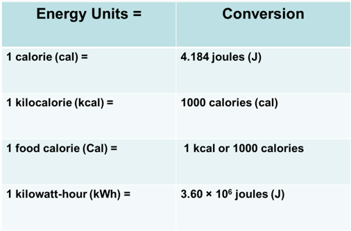
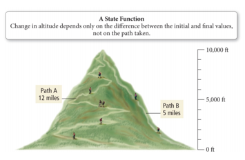

Week 13 - Day 1 (Ch 10 - pt 1)
Navigate using audio
- Test Wednesday
Clicker 1
- Audio 0:00:51.121105
- Which choice gives the correct oxidation numbers for all three elements in Rb2SO3 in the order that the elements are shown in the formula?
- A) -2, +6, -2
- B) -1, +4, -3
- C) +2, +4, -2
- D) +1, +4, -2
- E) +1, +6, -6
Chapter 10
Thermochemistry
- Audio 0:03:04.167112

Nature of Energy, Work, and Heat
- Audio 0:03:40.491883
- Energy is anything that has the capacity to do work.
- Think of energy as a quantity an object or collection of objects can possess
- Energy can be exchanged between objects through contact.
- For example:
- through collisions
- Work is a force acting over a distance.
- Energy = work = force × distance
- Heat is the flow of energy caused by a difference in temperature.
- Think of heat and work as the two different ways that an object can exchange energy with other objects.
- Either out of it, or into it
Classification of Energy
- Audio 0:06:25.636622
- Kinetic energy is energy of motion or energy that is being transferred.
- Thermal energy is the energy associated with temperature.
- Thermal energy is a form of kinetic energy.
Classification of Energy
- Audio 0:08:21.249403
- Potential energy is energy that is stored in an object or energy associated with the composition and position of the object.
- Audio 0:09:49.310141
- Energy stored in the structure of a compound is potential energy.
Manifestations of Energy
- Audio 0:12:15.834511
Some Forms of Energy
- Audio 0:13:00.066117
- Heat or thermal energy
- Kinetic energy associated with molecular motion
- Electrical
- Kinetic energy associated with the flow of electrical charge
- Light or radiant energy
- Kinetic energy associated with energy transitions in an atom
- Nuclear
- Potential energy in the nucleus of atoms
- Chemical
- Potential energy due to the structure of the atoms, the attachment between atoms, the atoms’ positions relative to each other in a molecule, or the molecules’ relative positions in the structure
Units of Energy
- Audio 0:14:08.320504
- The amount of kinetic energy an object has is directly proportional to its mass and velocity.
- KE = ½mv2
- When the mass is in kg and velocity is in m/s, the unit for kinetic energy is a joule (J).
- 1 J = kg m2/s2 = 1 N m
- 1 joule of energy is the amount of energy needed to move a 1 kg mass at a speed of 1 m/s.
- A calorie (cal) is the amount of energy needed to raise the temperature of one gram of water 1 °C.
- 1 kcal = energy needed to raise 1000 g of water 1 °C
- A food Calorie (Cal) is 1000 calories.
- 1 kcal is equivalent to ONE food Calorie = kcals.
Conversion between Energy Units
- 
Conservation of Energy
- Audio 0:18:02.274506
- The law of conservation of energy states that energy can be neither created nor destroyed.
- When energy is transferred between objects, or converted from one form to another, the total amount of energy present at the beginning must be present at the end.
System and Surroundings
- System is defined as the material within which the process we are studying happens.
- Surroundings are defined as everything else with which the system can exchange energy.
- Thermodynamics is the study of energy that is exchanged between the system and the surroundings.
- Energy can flow from the system to the surroundings.
- Energy of the system drops; energy of surroundings increases.
- Exothermic (flow out of system)
- Energy can flow into the system from the surroundings.
- Energy of the system increases; energy of the surroundings decreases.
- Endothermic (flow into system)
- Energy can flow from the system to the surroundings.
Comparing the Amount of Energy in the System and Surroundings during Transfer
- Audio 0:24:03.313606
- Conservation of energy means that the amount of energy gained or lost by the system has to be equal to the amount of energy lost or gained by the surroundings.
The First Law of Thermodynamics: Law of Conservation of Energy
- Thermodynamics is the study of energy and its interconversions.
- Audio 0:24:58.285011
- The first law of thermodynamics is the law of conservation of energy.
- This means that the total amount of energy in the universe is constant.
- Therefore, you can never build a system that will continue to produce energy without some source of energy.
Energy Flow and Conservation of Energy
- Audio 0:26:06.301332
- Conservation of energy requires that the sum of the energy changes in the system and the surroundings must be zero.
- Change(energyuniverse) = 0
- =Change(Energysystem) + Change(Energysurroundings)
- ΔEnergyuniverse = 0 = ΔEnergysystem + ΔEnergysurroundings
- Δ is the symbol that is used to mean change.
- – Final amount – initial amount
Internal Energy
- Audio 0:27:47.890733
- The internal energy is the sum of the kinetic and potential energies of all of the particles that compose the system.
- The change in the internal energy of a system only depends on the amount of energy in the system at the
beginning and end.
- ΔE = Efinal – Einitial
- ΔEreaction = Eproducts − Ereactants
- A state function is a mathematical function whose result only depends on the initial and final conditions, not on the process used.
- It is an Extensive Property –depends upon the amount of material
State Function
- To reach the top of the mountain, there are two trails:
-
- Long and winding
-
- Short but steep
-
- Regardless of the trail, when you reach the top, you will be 10,000 ft above the base.
- The distance from the base to the peak of the mountain is a state function. It depends only on the difference in elevation between the base and the peak, not on how you arrive there!
- 
In Summary:
- Audio 0:33:20.823776
- If the reactants have a higher internal energy than the products:
- ΔEsys is said to be negative because energy flows OUT of the system into the surroundings.
- If the reactants have a lower internal energy than the products:
- ΔEsys is said to be positive because energy flows INTO the system from the surroundings.
- The internal energy of the system can be thought in a similar manner.
- Energy flowing out of the system is like a withdrawal and therefore carries a negative sign.
- Energy flowing into the system is like a deposit and carries a positive sign.
Energy Exchange
- Audio 0:34:35.272796
- Energy is exchanged between the system and surroundings through heat and work.
- q = heat (thermal) energy
- w = work energy
- q and w are NOT state functions; their value depends on the process.
- ΔE = q + w

Energy Exchange
- Audio 0:35:29.581181
- Chemists are “System Oriented” so energy gained by system is positive, energy lost is negative
- doesn’t matter if it is heat flow or work
- (Older) engineering convention where heat flow in is positive and work out is positive
Heat Exchange
- Audio 0:36:39.238039
- Heat is the exchange of thermal energy between a system and surroundings.
- Heat exchange occurs when system and surroundings have a difference in temperature.
- Temperature is the measure of the thermal energy within a sample of matter.
- Heat flows from matter with high temperature to matter with low temperature until both objects reach the same temperature.
- Thermal equilibrium
Quantity of Heat Energy Absorbed: Heat Capacity
- Audio 0:38:11.929773
- When a system absorbs heat, its temperature increases.
- The increase in temperature is directly proportional to the amount of heat absorbed.
- The proportionality constant is called the heat
capacity, C.
- q = C × ΔT
- Units of C are J/°C or J/K.
- The larger the heat capacity of the object being studied, the smaller the temperature rise will be for a given amount of heat.
Factors Affecting Heat Capacity
- The heat capacity of an object depends on its amount of matter.
- Directly proportional to mass.
- 200 g of water requires twice as much heat to raise its temperature by 1 °C as does 100 g of water.
- The heat capacity of an object depends on the type of material.
- 1000 J of heat energy will raise the temperature of 100 g of sand 12 °C, but only raise the temperature of 100 g of water by 2.4 °C.
Clicker 2
- Which of the following signs on q and w represent a system that is doing work on the surroundings, as well as gaining heat from the surroundings?
- A) q=+, w=-
- B) q = -, w = +
- C) q = +, w = +
- D) q = -, w = -
- E) None of these represent the system referenced
Vocab
| Term | Definition |
|---|---|
| energy | anything that has the capacity to do work |
| work | force acting over a distance |
| kinetic energy | energy of motion |
| thermal energy | energy associated with temperature |
| potential energy | energy stored in an object or associated with the composition of an object |
| heat | the flow of energy caused by a difference in temperature |
| joule | the unit for kinetic energy (N m) |
| calorie | the amount of energy needed to raise the temperature of one gram of water 1 °C |
| law of conservation of energy | states that energy can be neither created nor destroyed |
| system | the material within which the process we are studying happens |
| surroundings | defined as everything other than the system with which the system can exchange energy |
| thermodynamics | the study of energy and its interconversions |
| internal energy | the sum of the kinetic and potential energies of all of the particles that compose the system |
| state function | mathematical function whose result only depends on the initial and final conditions, not on the process used |
| temperature | the measure of the thermal energy within a sample of matter |